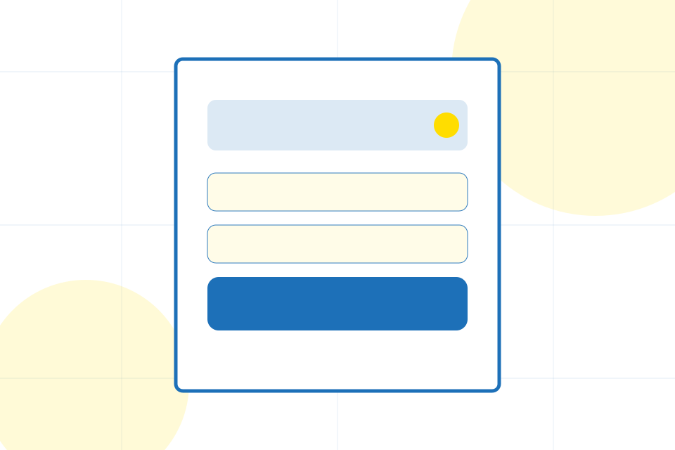

ASH-TRA static portfolio support
Terms of Use
This static portfolio site demonstrates a premium ASH-TRA build for Government, Public Sector & Civic Services. Content is informational and must be reviewed by the final client for legal, operational, pricing, and regulatory accuracy before publication.
Public service content must be verified by the responsible authority before publication.
Visitors should treat pricing, availability, service descriptions, credentials, and policy language as demonstration material until the final business owner approves live terms.